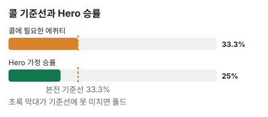

안녕하세요. 오늘은 상대가 리버에 팟만큼 크게 질렀을 때를 볼게요.
턴까지 탑페어로 잘 따라왔는데, 리버에 K가 떨어지고 상대가 팟만큼 걸었어요. 버리자니 아깝고, 콜하자니 불안하죠. 오늘은 이 장면에서 기준선이 어디까지 올라가는지, 그리고 리버 카드 한 장이 무엇을 바꿨는지 처음부터 따라가 볼게요.
이 글에서 배울 것
- 팟벳에 콜하려면 왜 3번 중 1번을 이겨야 하는지 직접 따져 보기
- 리버 카드 한 장에 탑페어가 세컨드 페어로 내려갈 때, 상대 핸드가 어떻게 달라지는지
- "아까워서 콜"이 아니라 기준선과 승률로 폴드를 고르는 법
오늘의 핸드
Hero (빅블라인드 자리 · 스택 100BB)


프리플랍
상대(BTN) 2.5BB 오픈 → SB 폴드 → Hero 콜
팟 5.5BB
플랍 · 팟 5.5BB


Hero 체크 → 상대 2.75BB 벳(하프팟) → Hero 콜
Hero는 탑페어예요. 보드에서 가장 높은 카드 Q와 짝이 맞았죠. 다만 키커(같은 페어끼리 붙을 때 승부를 가르는 나머지 카드)가 T라서 아주 세지는 않아요.
턴 · 팟 11BB


Hero 체크 → 상대 5.5BB 벳(하프팟) → Hero 콜
3이 나와도 Hero 핸드 이름은 그대로 탑페어예요. 다만 33은 셋이 됐고, A-4 같은 핸드는 2만 오면 A-2-3-4-5 스트레이트가 되는 드로우가 생겼어요.
리버 · 팟 22BB


Hero 체크 → 상대 22BB 벳(팟벳) → Hero는 콜? 폴드?
리버에 K가 나왔어요. 이제 Q는 보드에서 두 번째로 높은 카드라서 Hero는 세컨드 페어예요. K가 들어간 페어를 가진 상대에게는 져요.
결론부터 말할게요. 오늘 가정에서는 폴드가 이득입니다. 콜하면 한 번에 평균 5.5BB씩 잃어요.
왜 그런지 4단계로 볼게요. 핵심은 "팟벳이면 기준선이 얼마나 올라가나"예요.
1단계. 콜하려면 몇 번 이겨야 하나 (필요 에퀴티)
먼저 용어
에퀴티 = 이 팟에서 이길 확률이에요. 필요 에퀴티는 콜해서 본전이 되려면 최소한 이 정도는 이겨야 한다는 확률이고요.
피자 세 조각
팟벳 콜은 피자를 세 조각으로 나누는 것과 같아요. 원래 팟 22BB, 상대 벳 22BB, Hero 콜 22BB, 모두 똑같은 크기라 세 조각이죠.
이기면 세 조각을 다 가져오고, Hero가 새로 내는 건 그중 한 조각이에요. 그러니 적어도 3번 중 1번은 이겨야 손해가 아니에요.
3번 콜해 보면
이 콜을 3번 하고 그중 1번만 이긴다고 해 볼게요.
- 1번 이김: 원래 팟 + 상대 벳 = 44BB를 순수하게 벌어요
- 2번 짐: Hero 콜 22BB씩, 22 × 2 = 44를 잃어요
번 돈과 잃은 돈이 같아요. 딱 본전이에요.
공식으로 확인
B06에서 배운 공식 그대로예요. 우리가 낼 돈 ÷ 콜한 뒤 전체 팟.
필요 에퀴티 = 22(Hero 콜) ÷ (22(원래 팟) + 22(상대 벳) + 22(Hero 콜)) = 22 ÷ 66 = 33.3%
3번 중 1번은 이겨야 본전이에요. 그리고 팟벳은 언제나 세 덩어리가 똑같으니, 팟이 얼마든 팟벳 = 33.3%예요. "몇 대 1"로 말하면 44 ÷ 22 = 2, 2 대 1이고요.
바로 앞 글에서 하프팟이면 4번 중 1번(25%)이었던 걸 떠올려 보세요. 벳이 팟의 절반에서 팟만큼으로 커지자, 기준선이 4번 중 1번에서 3번 중 1번으로 올라갔어요.
2단계. 오늘의 가정 — Hero가 이길 확률
리버 K가 바꾼 것
턴까지는 Q 페어가 보드에서 가장 높은 페어였어요. 그런데 리버 K 한 장으로 Hero를 이기는 핸드가 늘었어요.
보드 Q♠ 9♣ 5♥ 3♦ K♣에서 Hero의 Q-T를 이기는 핸드를 두 묶음으로 나눠 볼게요.
턴부터 이미 Hero를 앞서던 핸드
- Q 페어에 키커가 더 높은 핸드: Q-J, A-Q, K-Q(K-Q는 리버 K로 투페어까지 됐어요)
- 보드보다 높은 포켓페어 AA·KK(KK는 리버 K로 셋이 됐어요)
- 셋(포켓페어가 보드 한 장과 맞아 같은 숫자 3장): QQ·99·55·33
- 투페어(손의 두 장이 보드 두 장과 각각 짝): Q-9, 9-5 등
리버 K로 새로 Hero를 앞지른 핸드
- K가 들어간 페어: A-K, K-J, K-T처럼 턴까지는 페어도 없던 핸드
- K가 들어간 투페어: K-9, K-5 등
- 스트레이트(숫자 5개 연속): J-T
J-T는 턴에 이미 9-T-J-Q 네 장이 이어져 있어서 8이나 K 한 장을 기다리던 핸드예요. 그 J-T가 하필 리버 K를 맞은 거예요.
상대가 벳하는 이유는 둘 중 하나
오늘 가정에서는 상대가 리버에 크게 건 이유를 두 묶음으로 봐요.
① 센 핸드로 돈을 더 받으려는 벳. 위에서 센 핸드들이에요. 특히 리버 K로 좋아진 핸드가 이 묶음에 새로 들어왔어요.
② 못 맞춘 핸드로 Hero를 접게 하려는 벳. 이걸 블러프라고 해요. 쇼다운까지 가면 못 이기니, 큰 벳으로 Hero를 접게 하는 수밖에 없는 핸드예요. 이 보드라면 스트레이트를 노리다 빗나간 핸드가 대표적이에요. 예를 들어 8-7은 6이 와야 5-6-7-8-9였고, A-4는 2가 와야 A-2-3-4-5였는데 둘 다 못 맞췄어요.
(보드에 같은 무늬가 세 장 깔리지 않아서 플러시는 나올 수 없어요.)
25%라는 가정
상대 손은 볼 수 없으니, 오늘은 "이 상대가 이렇게 벳할 때 Hero가 이길 확률은 25%", 즉 4번 중 1번이라고 가정할게요.
두 묶음으로 바꿔 말하면, 상대가 이 리버에 팟벳을 4번 하면 3번은 ① 센 핸드, 1번은 ② 블러프라는 뜻이에요. Hero는 ①에 지고 ②에 이기니까요. Hero와 비기는 다른 Q-T나, Hero보다 약한 핸드로 하는 얇은 벳은 이 틀에서 빼고 단순하게 본 거예요.
3단계. 나란히 놓고 비교하기
B14에서 연습한 그 비교예요.
| 확률 | |
|---|---|
| 콜에 필요한 에퀴티 | 33.3% |
| Hero 가정 승률 | 25% |

25% < 33.3%. 기준선은 3번 중 1번인데 Hero는 4번 중 1번밖에 못 이겨요. 그래서 폴드예요.
4단계. 돈으로 바꿔 보기 — 4번 콜하면?
- 1번 이김: 원래 팟 22BB + 상대 벳 22BB = 44BB를 순수하게 벌어요
- 3번 짐: 한 번에 Hero 콜 22BB씩 → 66BB 잃어요
- 합계: 44 − 66 = −22BB → 한 번에 평균 −5.5BB
콜 평균 손익 = 0.25 × 44 − 0.75 × 22 = 11 − 16.5 = −5.5BB
폴드하면 이 팟에 더 넣지도 받지도 않으니 0BB예요. 그래서 폴드가 콜보다 한 번에 5.5BB 이득이에요.
왜 그럴까: 큰 벳은 "블러프가 더 많아야" 콜할 수 있다는 뜻이에요
기준선을 블러프로 바꿔 읽기
오늘 가정처럼 상대 벳을 ① 센 핸드와 ② 블러프로 나누면, 두 숫자가 이렇게 읽혀요.
- 필요 에퀴티 33.3% = 상대 팟벳 3번 중 1번은 블러프여야 본전
- 가정 승률 25% = 상대 팟벳 4번 중 1번이 블러프
그러니까 이 폴드는 "Q 페어가 약해서"가 아니라, "이 상대가 팟벳에 섞는 블러프가 기준선보다 적어서" 나온 결론이에요.
벳이 커지면 기준선이 왜 올라갈까
팟벳이면 Hero는 22BB를 걸고 44BB를 노려요. 하프팟이었다면 11BB를 걸고 33BB를 노렸겠죠. 벳이 커지면 거는 돈과 노리는 돈이 같은 금액만큼 함께 늘지만, 원래 팟 22BB는 그대로예요.
그래서 "건 돈에 비해 노리는 돈"의 비율이 3 대 1에서 2 대 1로 줄어요. 받는 돈이 상대적으로 적어지니, 상대 블러프가 더 많이 섞여 있어야 본전이 맞는 거예요.
리버 K는 블러프를 센 핸드로 바꿔 놓았어요
2단계의 두 번째 묶음을 다시 보세요. A-K, K-J, K-T는 턴까지 페어가 없었어요. 그대로 리버가 빈 카드였다면 쇼다운에서 Hero를 못 이기니, 크게 건다면 블러프 후보였던 핸드예요. J-T도 못 맞췄다면 블러프 후보였고요.
그런데 리버 K 한 장으로 이 핸드들이 한꺼번에 ① 센 핸드 묶음으로 넘어갔어요. 블러프 묶음에서 빠지고 센 핸드 묶음에 더해졌으니, 양쪽이 동시에 움직인 거예요. 오늘 가정 승률이 4번 중 1번까지 낮은 건 이렇게 리버 카드가 상대의 블러프를 밸류로 바꿔 놓은 판이기 때문이에요.
폴드를 만든 두 가지
정리하면 오늘 Hero를 폴드로 만든 건 두 가지예요.
- 벳 크기(팟벳)가 기준선을 3번 중 1번으로 올렸고
- 리버 K가 블러프를 센 핸드로 바꿔서 승률 쪽을 내렸어요
기준선은 벳 크기가, 승률은 상대 핸드가 정한다는 B14의 이야기가 한 판 안에서 그대로 보이는 장면이에요.
자주 하는 실수
실수 1. 리버 카드를 보기 전 핸드 이름으로 판단하기 "탑페어니까 콜"은 턴까지의 이야기예요. 리버 K로 Hero는 세컨드 페어가 됐고, K가 들어간 페어와 J-T 스트레이트가 새로 Hero를 앞질렀어요. 대신 리버가 깔리면 "방금 이 카드로 누가 좋아졌지?"부터 확인해요.
실수 2. 하프팟 기준을 팟벳에도 쓰기 앞 스트리트에서 하프팟에 콜했으니 리버도 같은 기준으로 보는 실수예요. 하프팟은 4번 중 1번이지만, 팟벳은 3번 중 1번이에요. 같은 승률이라도 하프팟 기준과 팟벳 기준에서 내리는 결론은 달라요. 대신 벳마다 "팟의 몇 분의 몇?"을 새로 봐요.
실수 3. "블러프일 수도 있잖아" 하고 콜 블러프가 있을 수 있다는 것만으로는 부족해요. 팟벳에 콜하려면 3번 중 1번은 블러프여야 하는데, 오늘 가정은 4번 중 1번이에요. 대신 "블러프가 있나?"가 아니라 "블러프가 기준선만큼 있나?"를 물어요.
"턴까지 탑페어였는데, 폴드하면 아깝지 않나요?"
좋은 질문이에요. 계속 따라온 핸드라 버리기 아깝죠.
그런데 플랍·턴에 이미 낸 칩은 팟에 들어가서 더 이상 Hero 것이 아니에요. 콜하든 폴드하든 그 칩은 돌아오지 않아요. 지금 정할 건 "22BB를 더 낼지" 하나뿐이에요.
그래서 오늘 폴드한 22BB는 잃은 게 아니라 지킨 거예요.
숫자가 뒤집히는 지점
기준은 두 가지예요.
- 상대 벳 크기가 바뀌면: 필요 에퀴티가 다시 계산돼요. 그 값이 Hero 승률(25%)보다 높아지면 폴드, 낮으면 콜
- Hero 승률이 바뀌면: 지금 필요 에퀴티(33.3%)보다 높은지 낮은지만 보면 돼요
벳 크기가 바뀌는 경우는 문제 2에서 직접 계산해 보세요.
선생님의 한마디
리버에 큰 벳을 맞으면 이 순서로 보세요.
- 상대가 블러프로 쓸 만했던 핸드(빗나간 드로우, 페어 없는 높은 카드)를 떠올리고, 리버 카드가 그중 무엇을 맞춰 줬는지 지우기
- 벳을 팟의 몇 분의 몇인지로 읽고 기준선 세우기
- 지금까지 낸 칩은 머리에서 지우고, 이번에 더 낼 돈만 놓고 비교하기
연습 문제 (같은 보드, 같은 Hero 핸드)
홀덤학습 에퀴티 계산기에서 내 카드를 고른 뒤 [콜 수익] 칸에 지금 팟(상대 벳 포함)과 콜 금액을 넣으면 필요 에퀴티가 나와요.
문제 1. 리버가 K가 아니라 2♦였다고 해 볼게요(보드 Q♠ 9♣ 5♥ 3♦ 2♦). 오늘 2단계에서 이름이 나온 A-4, A-K, K-J, J-T는 각각 센 핸드 묶음과 블러프 묶음 중 어디로 갈까요? 그리고 Hero의 Q-T는 무슨 핸드일까요?
정답 보기
- A-4: 2가 와서 A-2-3-4-5 스트레이트 완성 → 센 핸드로 넘어가요
- A-K, K-J: 페어가 안 됐으니 쇼다운에서 Hero를 못 이겨요 → 크게 건다면 블러프 쪽
- J-T: 8도 K도 안 와서 빗나간 드로우 → 블러프 쪽
- Hero Q-T: 2는 Q보다 낮으니 여전히 탑페어
오늘 K 리버와는 정반대로, 블러프 후보 대부분이 블러프로 남고 A-4만 센 핸드가 돼요. 리버 카드마다 두 묶음이 다르게 움직이니, 같은 팟벳이라도 리버 카드부터 보는 거예요.
문제 2. Hero 가정 승률은 그대로 25%인데, 상대가 리버에 5.5BB(팟의 4분의 1)만 걸었다면?
정답 보기
콜. 필요 에퀴티 = 5.5 ÷ (22 + 5.5 + 5.5) = 16.7%, 25%가 더 커요. 이기면 원래 팟 22BB + 상대 벳 5.5BB = 27.5BB를 벌어요. 콜 손익 = 0.25 × 27.5 − 0.75 × 5.5 = 6.875 − 4.125 = +2.75BB. 같은 핸드, 같은 상대여도 벳 크기 하나로 결론이 바뀌어요.
핵심 정리
- 팟벳은 원래 팟·상대 벳·Hero 콜이 똑같은 세 덩어리라, 팟 크기와 상관없이 기준선이 3번 중 1번(33.3%)이에요
- 오늘 가정처럼 상대가 센 핸드 아니면 블러프로 벳한다고 보면, 기준선은 "블러프가 이만큼은 섞여야 한다"는 뜻이에요
- 리버 카드 한 장이 상대의 센 핸드 묶음을 키우면, 같은 핸드라도 승률이 내려가요
- 이미 낸 칩은 결정에 넣지 않아요. 지금 따질 건 이번에 더 낼 돈뿐이에요
정리하며
오늘은 리버 팟벳에 세컨드 페어가 된 Q로 콜할지 정했어요.
팟벳은 세 덩어리가 똑같아서 3번 중 1번이 기준선이었고, 리버 K로 센 핸드가 늘어난 상대에게 Hero는 4번 중 1번밖에 못 이겼어요. 그래서 폴드예요. 이 폴드는 Q가 약해서가 아니라, 큰 벳이 요구하는 블러프 양을 상대가 채우지 못해서 나온 결론이었죠.
다음 글 B13에서는 리버가 아니라 턴에서, 팟의 3분의 1짜리 작은 벳을 받는 장면을 봐요. 아직 카드가 한 장 남아 있을 때 계산이 무엇이 달라지는지 이어서 볼게요.
AI 작성 · 숫자는 계산 검증 · 가정 승률 기준 · 리버 마지막 결정이라 콜 손익이 최종 결과